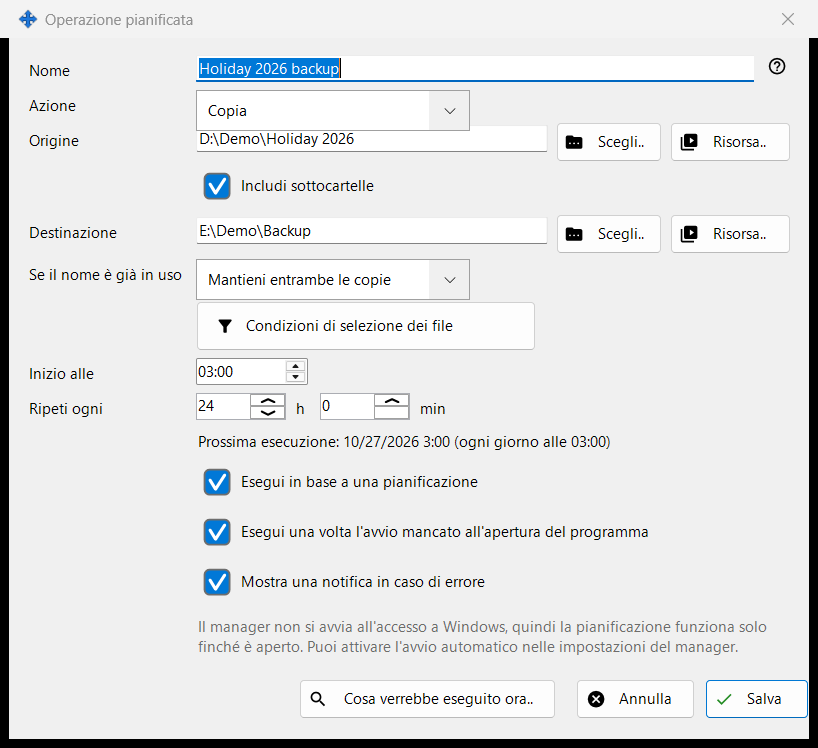
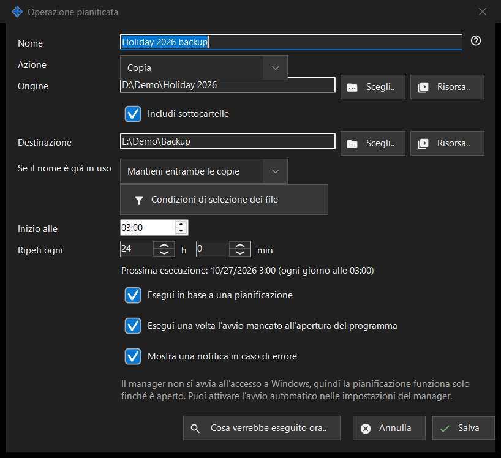

Operazione pianificata
Scopo
Modifica una singola operazione sui file pianificata: copiare, spostare, eliminare o archiviare file da un'origine a una destinazione con una pianificazione ripetuta. Si apre da «Nuova..» o «Modifica..» nella pagina «Operazioni sui file pianificate» delle impostazioni di Share Manager e dalla voce del menu cartella del visualizzatore «Pianifica un'operazione per questa cartella..», che inserisce quella cartella come origine.


In questo ordine
- Inserisci un Nome e scegli l'Azione.
- Imposta l'Origine e, per copia, spostamento e archiviazione, la Destinazione, con «Scegli..», «Risorsa..» o «Tramite Google Drive».
- Per copia e spostamento scegli cosa succede «Se il nome è già in uso».
- Apri «Condizioni di selezione dei file» per restringere i file.
- Imposta «Inizio alle» e «Ripeti ogni» e lascia selezionata «Esegui in base a una pianificazione».
- Controlla «Cosa verrebbe eseguito ora..» e premi «Salva».
Gli elementi
Azione e conflitti di nome
L'Azione è Copia, Sposta, Elimina o Archivia e la finestra mostra solo le righe necessarie a quell'azione: Elimina non ha Destinazione; «Se il nome è già in uso» (Salta, Sovrascrivi, Mantieni entrambe le copie) compare solo per Copia e Sposta; «Elimina i file originali dopo la verifica dell'archivio» compare solo per Archivia e rimuove gli originali soltanto dopo che l'archivio è stato riletto e verificato.
Origine e destinazione
Digita un percorso completo oppure premi «Scegli..». «Risorsa..» sceglie un server SFTP o una cartella di rete dall'elenco delle risorse del visualizzatore e non è offerta per Archivia, che accetta solo cartelle normali e Google Drive. «Tramite Google Drive» compare solo se hai effettuato l'accesso a Drive o se quel lato lo usa già. Quando «Includi sottocartelle» è disattivata, vengono elaborati solo i file della cartella di origine stessa. «Salva» rifiuta le cartelle di sistema e dei programmi e una destinazione uguale all'origine o contenuta in essa, e dice cosa non va.
Eliminazione dei file
Quando dei file verranno rimossi (Elimina, oppure Archivia con l'opzione degli originali), una riga «Elimina: ..» indica dove vanno: nel Cestino, oppure in modo permanente con il motivo, per esempio un disco di rete o rimovibile non ha il Cestino. Per un'operazione di questo tipo Invio non salva; premi «Salva» di proposito. Un'esecuzione pianificata non fa mai domande e registra dove sono finiti i file eliminati.
Condizioni di selezione dei file
Il pannello si apre da solo quando le condizioni differiscono da quelle predefinite. Tipi di file: Tutti i file, Immagini, Audio, Video, Documenti («Tutti i file» disattiva gli altri quattro). Modificato: Tutto il periodo, Nuovi dall'ultima esecuzione, Ultima ora, Ultime 24 ore. «Maschera del nome» e «Escludi per maschera» accettano più maschere separate da un punto e virgola, per esempio *.jpg;IMG_??.png, confrontate con il nome del file. «Più vecchio di» e «Più recente di» sono in giorni e ore, «Più grande di» e «Più piccolo di» in MB. «Includi file nascosti e di sistema» è disattivata per impostazione predefinita.
Pianificazione
«Inizio alle» imposta l'ora del giorno e «Ripeti ogni» l'intervallo in ore e minuti; un numero intero di giorni si ripete alla stessa ora. La riga sotto mostra «Prossima esecuzione: ora (regola)» oppure «La pianificazione è disattivata: l'operazione viene eseguita solo manualmente.» «Esegui una volta l'avvio mancato all'apertura del programma» e «Mostra una notifica in caso di errore» sono scelte separate. Un'altra riga indica che la pianificazione funziona solo mentre Share Manager è in esecuzione e se si avvia all'accesso a Windows; nulla in questa finestra cambia l'avvio automatico.
Anteprima e Salva
«Cosa verrebbe eseguito ora..» elenca i file che l'operazione elaborerebbe e non cambia nulla; un'esecuzione non ne ha bisogno. «Salva» memorizza l'operazione oppure elenca ciò che va corretto. «Annulla» scarta le tue modifiche.
Impostazioni del gestore · Impostazioni condivisione SFTP · Impostazioni server di scambio